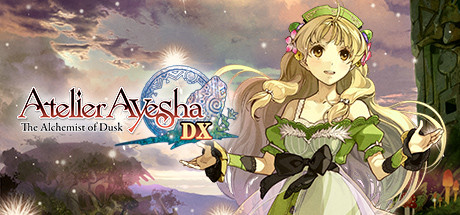
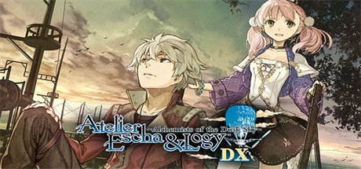
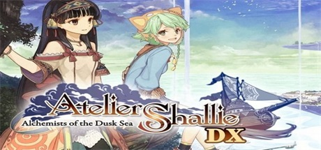

Atelier Series(DUSK)

Atelier series is a franchise of role-playing video games developed by the Gust Corporation since 1997, primarily for the PlayStation line of consoles (PlayStation, PlayStation 2, PlayStation 3, and PlayStation 4); portable versions for the Game Boy Color, Game Boy Advance, Nintendo DS, Nintendo 3DS, PlayStation Portable, PlayStation Vita and WonderSwan Color have also been made. Two of the games in the series were ported to the Sega Saturn and Dreamcast. The series has been primarily released in Japan, though recent titles have been localized for other markets. The franchise centers around the concept of an atelier specialising in alchemy; the gameplay involves finding, collecting, and combining items in recipes to create better items, which allows the player to advance further in the game. A manga adaptation by Yoshihiko Ochi has also been published.
Official Website

Atelier Ayesha: The Alchemist of Dusk
BGM:Altair
Atelier Ayesha stars Ayesha Altugle, who runs an herbalist's workshop with her sister Nio. After Nio disappears mysteriously, Ayesha meets an alchemist called Keithgriff Hazeldine, who reveals that she must master the art of alchemy herself in order to rescue her sister, but she has only a few years to do so, or Nio will eventually be lost forever. Overcoming sadness is one of the game’s themes and players will see Ayesha grow as she writes diary entries, while she gathers allies and improves her alchemy skills in her quest to reunite with her missing sister.
Atelier Ayesha takes place in a new world separate from the Arland saga where the art of alchemy used to thrive in the past, but now only a few know about its secrets.

Atelier Escha & Logy: Alchemists of the Dusk Sky
BGM:Sky of Twilight
The game's story takes place about four years after the beginning of Atelier Ayesha: The Alchemist of Dusk in a far away place to the west of the Twilight Land where the local administration hires two new alchemists, Escha and Logy as members of their R&D division. While learning the ropes of their new occupation, Escha and Logy gather friends and companions as they unlock the secrets of the nearby ruins and help the citizens in a world that is still recovering from a catastrophic event known as "The Dusk".
It is the first, and so far only Atelier title to be adapted into an anime.

Atelier Shallie: Alchemists of the Dusk Sea
雲烟飛動
The game's story takes place about 10 years after the beginning of Atelier Ayesha: The Alchemist of Dusk and 6 years after the beginning of Atelier Escha & Logy: Alchemists of the Dusk Sky. As water sources dry up from an oasis town, the plants wilt and animals go hungry. It is here where two alchemists with different methods of making a living meet. Whilst Shallistera aims to find a way to save her village from demise, Shallotte Elminus goes on her daily life in an attempt to become a proper alchemist. Shallistera's story will reveal the truth and mysteries that have been depicted throughout the Dusk series, while Shallotte's story will revolve around daily life in the world. After meeting each other, Shallistera and Shallotte will grow by fulfilling goals by working together and the friendship of the two is one of the elements that the story will focus on.